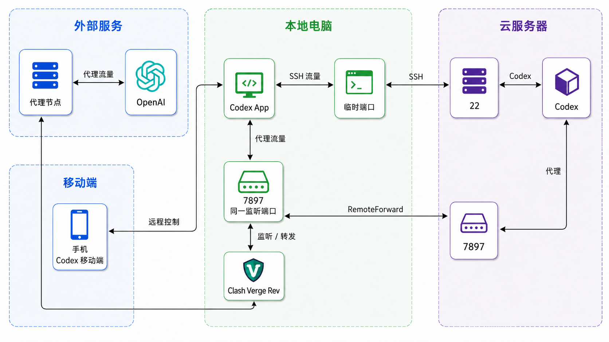

这篇文章解决一个实际问题：
手机发出任务，Windows 负责连接，Linux 云服务器负责运行 Codex；当云服务器无法直接访问 OpenAI 时，再借用 Windows 上的 Clash 代理。
可以把三台设备理解成三个角色：
| 设备 | 做什么 |
|---|---|
| 手机 | 发任务、看进度、回复和批准操作 |
| Windows 电脑 | 运行 Codex App，保持连接，并运行 Clash Verge Rev |
| Linux 云服务器 | 保存项目，运行 Codex、测试和部署 |
手机和云服务器并不是直接连接。手机先连接 Windows 上的 Codex App，再由 Codex App 连接云服务器。
在本文场景中，国内云服务器无法直接访问 OpenAI，所以云端 Codex 的网络请求还要经过 Windows：
手机 ↓ 操作 Windows Codex App ↓ SSH 连接 Linux 云服务器 Codex ↓ 代理请求 Windows Clash Verge Rev ↓ 网络代理节点 → OpenAI

手机控制 Windows Codex App；云服务器 Codex 的代理流量通过 SSH 回到 Windows，再由 Clash 访问 OpenAI。
这里的 SSH 可以先理解成“Windows 通往云服务器的一扇加密的门”。
RemoteForward 的 SSH：除了登录，还在门里增加一条“回程通道”，把云服务器的代理请求带回 Windows。RemoteForward 是 SSH 的反向端口转发功能。它让云服务器上的 Codex 访问云端 127.0.0.1:7897 时，沿 SSH 连接回到 Windows 的 127.0.0.1:7897，再交给 Clash：
云服务器 Codex
↓ HTTP_PROXY / HTTPS_PROXY
云端 127.0.0.1:7897
↓ SSH RemoteForward
Windows 127.0.0.1:7897
↓
Clash Verge Rev → 网络代理节点 → OpenAI
因此，带 RemoteForward 的 SSH = 普通 SSH 登录 + 一条反向转发通道。它不是新的代理软件，也不是 VPN；只有明确使用云端 127.0.0.1:7897 的 Codex 及其子进程会走这条路径。
本文统一使用代理端口 7897。云端和 Windows 各有一个 7897，属于不同主机，不会冲突；但同一时间只能有一条连接占用云端 7897。
SSH 密钥是一对文件：
id_ed25519：私钥，只留在 Windows 本机；id_ed25519.pub：公钥，复制到 Linux 的 ~/.ssh/authorized_keys。服务器只保存公钥，不需要、也不应该保存私钥。
在 PowerShell 检查：
Get-ChildItem "$env:USERPROFILE\.ssh\id_ed25519*"如果没有 id_ed25519 和 id_ed25519.pub，生成它们：
ssh-keygen -t ed25519 -C "codex-windows"保存路径直接按回车使用默认值，并设置私钥口令。私钥口令不要写进配置文件或文章。
先用密码、云厂商控制台或现有密钥登录服务器。在 Windows 复制公钥：
Get-Content "$env:USERPROFILE\.ssh\id_ed25519.pub" | Set-Clipboard在 Linux 执行：
mkdir -p ~/.ssh
chmod 700 ~/.ssh
nano ~/.ssh/authorized_keys把公钥完整粘贴为一行，保存后执行：
chmod 600 ~/.ssh/authorized_keys公钥必须放在实际登录用户自己的目录中。例如登录用户是 dev，应放在 /home/dev/.ssh/authorized_keys，不是 /root/.ssh/authorized_keys。
ssh -i "$env:USERPROFILE\.ssh\id_ed25519" -o IdentitiesOnly=yes <你的Linux用户名>@<你的服务器IP>只要求输入私钥口令，通常就表示公钥认证成功。若仍要求 Linux 密码，检查公钥是否完整、用户是否正确，以及权限是否为 700 / 600。
编辑：
C:\Users\<你的Windows用户名>\.ssh\config写入以下内容，并替换服务器 IP、Linux 用户名和 Windows 用户名：
# 普通登录：PowerShell、VS Code 使用
Host aliyun_wlcb
HostName <你的服务器IP>
User <你的Linux用户名>
Port 22
IdentityFile C:/Users/<你的Windows用户名>/.ssh/id_ed25519
IdentitiesOnly yes
# Codex App 使用：登录 + RemoteForward
Host aliyun_wlcb_proxy
HostName <你的服务器IP>
User <你的Linux用户名>
Port 22
IdentityFile C:/Users/<你的Windows用户名>/.ssh/id_ed25519
IdentitiesOnly yes
RemoteForward 127.0.0.1:7897 127.0.0.1:7897
ExitOnForwardFailure yes
ServerAliveInterval 30
ServerAliveCountMax 3两个别名的区别：
| 命令 | 用途 |
|---|---|
ssh aliyun_wlcb | 普通登录，不建立反向转发 |
ssh aliyun_wlcb_proxy | 登录并建立云端 7897 到 Windows 7897 的反向转发 |
私钥始终留在 Windows；不要上传到手机、服务器或文章中。私钥泄露后，应立即删除服务器上的对应公钥并重新生成密钥。
启动 Clash Verge Rev，在 PowerShell 执行：
curl.exe -x http://127.0.0.1:7897 https://api.ipify.org能返回公网 IP，说明本机代理可用。
ssh aliyun_wlcb_proxy测试时保持该连接在线。实际使用 Codex App 时，由 App 管理这条连接，不要再手动启动第二条相同的转发。
另开一个 PowerShell，普通登录服务器：
ssh aliyun_wlcb在 Linux 执行：
ss -lnt | grep 7897
curl -x http://127.0.0.1:7897 https://api.ipify.org能返回代理节点的公网 IP，说明 RemoteForward 成功。
在 Linux 创建 Codex 环境文件：
mkdir -p ~/.codex
nano ~/.codex/.env写入：
HTTP_PROXY=http://127.0.0.1:7897
HTTPS_PROXY=http://127.0.0.1:7897
ALL_PROXY=http://127.0.0.1:7897
http_proxy=http://127.0.0.1:7897
https_proxy=http://127.0.0.1:7897
all_proxy=http://127.0.0.1:7897
NO_PROXY=127.0.0.1,localhost
no_proxy=127.0.0.1,localhost保存并限制权限：
chmod 600 ~/.codex/.env然后使用设备码登录：
codex login --device-auth
codex login status登录成功后，在项目目录启动：
cd /path/to/your/project
codex每次使用前：
aliyun_wlcb_proxy；手机不保存服务器私钥，也不直接建立 SSH。代码读写、命令执行、测试和部署都发生在 Linux 云服务器上。
remote port forwarding failed for listen port 7897云端 7897 已被另一条反向转发占用。关闭重复的 aliyun_wlcb_proxy，其他终端使用 aliyun_wlcb。
7897检查 Clash、Codex App 和带转发的 SSH 是否在线。也可以临时手动建立转发：
ssh -NT -R 127.0.0.1:7897:127.0.0.1:7897 aliyun_wlcb手动命令与 Codex App 的 aliyun_wlcb_proxy 二选一，不能同时运行。
检查 Windows 是否睡眠、Codex App 是否运行、本地网络是否正常。Windows App 或 SSH 断开后，手机远程控制和云端代理都会受到影响。
aliyun_wlcb 普通 SSH aliyun_wlcb_proxy SSH + RemoteForward 7897 云端代理入口 ↔ Windows Clash 入口